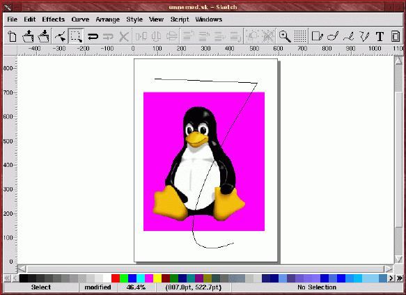
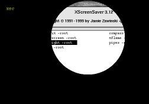
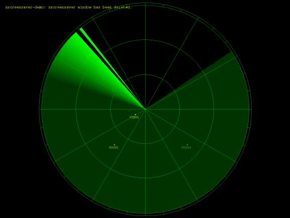

| © 1999 Michael J. Hammel |
|
|
|
I received a lot of email in response to my article on Vector Drawing tools for Linux. That's good - it's really the only way I know anyone really reads this stuff. Fortunately, it was all positive feedback, some praise and a lot of helpful hints relating to the tools I discussed. Here is some of the email I received, and my responses to them.
I'll
admit that ImPress has some bugs. Please give it a try sometime.
http://www.ntlug.org/~ccox/impress/index.html
Regards,
Chris
ccox@acm.org
'Muse:
Whoa. I didn't even know that ImPress was a vector tool. So
much for my research capabilities. I downloaded it and took a quick
look. I have to say, this may be the simplest tool of the bunch.
For someone who wants to create simple diagrams and then print them out,
this may just be the tool. It has a simple interface that includes
all the basic shapes you might want, plus support for embedded text and
Postscript output. It's not nearly as full featured as the TGIF or
XFig, but it is simple to use and requires no special configuration.
It doesn't even require compiling - it's a Tcl/Tk script! Very impressive.
Here are a few screen shots.
|
|
|
|
|
|
The downloadable package doesn't include much in the way of documentation, unfortunately. The Web site only contains HTML-ized versions of the documentation that comes with the package. But this small amount of documentation should still be enough to get you moving pretty quickly in this package. I did note that at least one part of the documentation was wrong: double clicking on the color palette entry in the main dialog doesn't bring up the color editing dialog. You need to double click on the Fill button instead. Minor detail. The program still works pretty good.
My only question: how did Chris get those pictures of Tux and the dinosaur into his example? The dinosaur looks like it might be clip art (vector graphics), but the Tux image looks like an imported raster graphic. There doesn't appear to be a raster import feature in the version I have. Maybe its something under development.
'Muse: This was very helpful information, especially the bit about what libraries are needed to run and what libraries are needed to compile KDE applications. Unfortunately, since it appears that KIllustrator is being tied to another suite of tools (KDE Office Suite), I doubt I'll try it myself. I don't need all those other pieces. Maybe they'll be part of the next full distribution I purchase, in which case I'll take a look at them then. I just don't feel like downloading huge amounts of stuff I won't really use anyway.
Your comments about KIllustrator in the Linux Gazette are missleading. Killustrator isn't "tied to KDE" as you indicate, it runs perfectly fine on any desktop. KIllustrator, however, uses KDE as application development framework, which is something completely different.
This has nothing to do with "being KDE-aware", it's all about writing applications. KDE is not just a desktop, it's a set of libraries and tools that makes it possible to write applications. By asking programmers not to use modern tools to develop their applications, you force them to re-invent the wheel over and over again.In the best case this will provide us with applications similar to xfig and tgif (which both cannot compete with modern standards). In the worst case this leads to no applications at all.
Come'on, installing software on linux today means a few clicks in kpackage, that can't be that hard ;-)
Matthias Ettrich <ettrich@kde.org>
'Muse: End users don't distiguish between "application development framework" and dependencies. It's just symantics. KIllustrator is tied to KDE because you need the appropriate KDE libraries to run the program and/or compile it. The same is true of the Gimp - it's tied to Gtk. The difference is that Gtk has been available in most Linux distributions, and for a number of other Unix platforms, for some time now (at least the past year). KDE is just now becoming part of most Linux distributions, which will make grabbing the occassional extra KDE package from the net a less complex issue in the future.
This isn't to say KDE is a problem to deal with, it's just not currently convenient to the end user. Gnome applications have the same problem. But for users on non-Linux platforms, for which neither Gnome or KDE are available, these applications are of no use. It's your choice as a developer, of course. I prefer to write for any Unix platform, or at least as many as I can reasonably support.
I read in your LG article that you could not get xfig to export or print. Is your problem perhaps that you have not got fig2dev installed? This program is part of the transfig package (see the xfig docs).
Yours,
Jeroen
Nijhof
J.H.B.Nijhof@aston.ac.uk
'Muse: Looks like that could be the reason. I, indeed, do not have fig2dev installed.
Sketch
I've just read the new issue of the Linux Gazette and your Graphics Muse column and I was delighted to see that you investigated the vector drawing programs available for Linux.
As the developer of Sketch, I was somewhat disappointed, as you can imagine, when I read that you weren't able to install it. The points you raise are perfectly valid, although most of the problems are caused by misleading statements in PILs README, I think. I guess that everybody who is not very experienced with building Python C-Extensions will have similar problems, and I don't know how many people have given up installing Sketch because of this.
In your column, you write:
Sketch requires Python v1.5.1 or later, the Python Imaging Library, v1.0b1 and Tcl/TK, version 8.0 or later. To build the Python Imaging Library (aka PIL) you can't use the RPM version of Python - you have to build the python distribution from source and install it. This is because you have to build PIL under the "Extensions" directory of the Python 1.5 directories.This is not true, actually. The PIL README says that you should unpack the archive in Python's Extensions directory, but you can in fact unpack it anywhere you like (in your home directory for instance) and build it there.
Although I have Python 1.5 installed on my stock RH 5.2 box, there is no Extensions directory. Plus, if I just made the directory where 1.5 is installed (/usr/lib/python1.5), I'd have to build the PIL as the root user. Not a good thing. So I downloaded the Python 1.5 source, built it, then tried the PIL buid. It didn't work - something about missing a config directory.You don't need the Python sources to build the PIL as long as you have a complete installation of the Python interpreter and the C-header-files, libraries and configuration files. RedHat has split Python into several packages. The header files and configuration files are in the python-devel rpm, as far as I can tell (I don't use RedHat, but I had a look at their ftp server), so if you install that rpm you should be able to build PIL with these commands:
% tar xvzf Imaging-1.0b1.tar.gzand install it under /usr/lib/python1.5/site-packages as described in the PIL README. After that, installing Sketch itself should be simple, I hope :)
% cd Imaging-1.0b1/libImaging/
% ./configure
% make
% cd ..
% make -f Makefile.pre.in boot
% make
All in all, I have to thank you for the article. As a developer, it's difficult to guess where user's may have problems and the information you provide is exactly what I need to make Sketch easier to install.
I really hope that you give Sketch another try and perhaps write about it and the other programs again in a future graphics muse column.
Bernhard Herzog <sketch@online.de>
'Muse: Attention developers - this is exactly the way you should respond to end user and press criticisms! I applaud Bernard for taking my issues to heart and offering such useful feedback. I hope, for my own projects, that I reply to criticisms' in the same professional and meaningful manner.
Oh, and Bernard's feeback was perfect. I managed to get things running pretty quick with his help. Note that he is correct about the Red Hat RPMs - if you are using the Red Hat 5.2 distribution you may not have automatically installed the Python development package, which you need to build PIL. You'll know this is the case if you try to run the Makefile.pre.in step (above) and get a message about
No rule to make target `/usr/lib/python1.5/config/MakefileThat would be because the "config" directory for Python only gets installed (using RPMs) with the python-devel-1.5.1-5 RPM for i386 package. Don't forget to also install the three header files from PIL into the python include directories. The INSTALL file for Sketch describes this simply enough. After getting the Python development package and Python Imaging Library installed, the build for sketch was very simple. Just folllow the steps in the README. Sketch itself is easy to build. It's all the bits and pieces it requires from Python that were a bit of a pain to get going.
One other thing: make sure you build with the 0.6.0 version. I tried with an earlier 0.5.5 version and had some build incompatibilities with my Python 1.5.1 installation. You can get around these easily enough, but its even easier if you just grab the 0.6.0 (or later) source code.

Sketch's interface is fairly simple to learn. Unlike TGIF or XFig, Sketch is more of an artists tool, something like Adobe Illustrator (it even reads and writes Illustrator files!). I wouldn't really put sketch in the same category as the other two - they seem meant for different uses. Being more of an artist (or at least a wanna-be artist), I really liked Sketch. Once I managed to get it running.
And just a little praise...
This is a letter from a real Graphics Muse fan! You are doing a great job with your column in the Linux Gazette, and all that monthly. Congratulations!
'Muse: Thanks!
Sometimes, I think of contributing more to the Linux community myself, but my daytime job eats up most of my time/energy. How can you make such a neat article every month? Where do you get your energy from? Kryptonite? :-)
'Muse: No, but a lack of anything that remotely resembles a social life helps. As for your contribution to the cause - you're making it now, by providing feedback to me. Don't underestimate the importance such feedback plays.
Why I'm really writing this letter...
In [last] month's Gazette you compare tgif and xfig. In brief: Well done. Great job! I liked especially the sentence that your preference towards tgif is _not_ mirrored in the numerical "test"-result. If every software comparison/test were done so carefully, we would have far fewer flame wars in the news groups.
'Muse: Maybe, but human instinct is toward clarification from the point of view of the reader. Which means argument is almost guaranteed at some point (at least between relatively intellectually motivated individuals). But I digress.
As I am a long-time (old-time?) user of both programs, I just want to add some fine points to your careful judgment. Why the heck would you want to use both? Well, once you are in the boat, you must row.
Almost all of the documents I produce are typeset with LaTeX. From time to time I have to include simple drawings. Now, because TeX produces such wonderful looking documents, the graphics have to match that. This means all the text (e.g. labels, legend) in a graph must be typeset with TeX. Using fonts from a different family does not look good. The problem is that TeX's graphing capabilities (i.e. the picture-environment) are very limited. What the user wants is the full power of Postscript. That said, xfig and it's companion programs transfig, and fig2dev are a blessing. They allow for exactly what I have been describing.
The typical data-flow looks like this:
editor
TeX
dvips
|-------> doc.tex ---------------+----> doc.dvi ---+----> doc.ps
^
^
xfig
fig2dev |
|
|-------> graph.fig ----+---> graph.tex
|
|
|
+---> graph.ps ----------->+
The dependencies between the files are automatically updated with a Makefile. OK, now you know why I am stuck with xfig: it is the only program that can separate the text-output (read: TeX) from the graphic-output (read: Postscript).
Enter: Postscript files.
Imagine a colleague walking in and saying: "We should include one of these fancy XYZ [insert program name yourself] outputs, you know that thing can produce Postscript-files." Oh, oh -- this is bad news.
Christoph
L. Spiel
cspiel@ccmr.cornell.edu
'Muse:
All very good points! So often we measure tools objectively, using
what we think are absolute comparisons of speed or performance. But
we often fail to measure the seemingly intangible value of comfort that
lies within a tool for the individual user. Perhaps we should look
at software less as abstract pieces of pseudo-machinery and more as extensions
of our daily lives. We give life to our automobiles by referring
to them as "she". And if that automobile provides no comfort, then
it has limited value to the owner. Comfort, it seems, should be an
intrinsic part of our measurements of a software tool's usefulness to the
individual.
In my fvwm-menu file I've added the following entries to run xscreensaver:
AddToMenu XScreensaver "Screen Saver"
Title
+ "Matrix"
Function ScreenSaverMatrix
+ "XSaver On"
Function ScreenSaverOn
+ "XSaver Off"
Function ScreenSaverOff
AddToFunc ScreenSaverMatrix
+ "I" Exec
exec xscreensaver -no-splash &
+ "I" Exec
exec xscreensaver-command -select 1&
AddToFunc ScreenSaverOn
+ "I" Exec
exec xscreensaver -no-splash &
AddToFunc ScreenSaverOff
+ "I" Exec
exec xscreensaver-command -exit&
+ "I" Exec
exec xset s on
The first entry, Matrix, will run only the xmatrix screensaver immediately and leave it running. The second entry just starts the screensaver using the first entry in my programs list in $HOME/.xscreensaver and allows it to cycle through the list. This also starts only when the configured inactivity period has expired. The last entry shuts xscreensaver off and returns my X servers screen blanker back on.
The three programs that come with xscreensaver - the xscreensaver daemon, xscreensaver-demo and xscreensaver-command - also include extensive man pages in HTML format. It seems a bit odd that there are som many options for something as simple as a screensaver, but they are all useful options. Be sure to read through the documentation before trying to set up running the screensaver from your window manager as I have done in the examples above.
Some of the other intersting hacks I have configured are:

Spotlight

Radar
It's just a fun thing to play with, not much else really. If you dig into the code for some of these hacks (and xscreensaver itself), however, you might just learn quite a bit about how low level graphics work under X.
Enjoy!
|
| © 1998 by Michael J. Hammel |